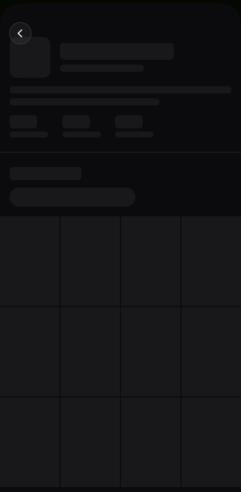
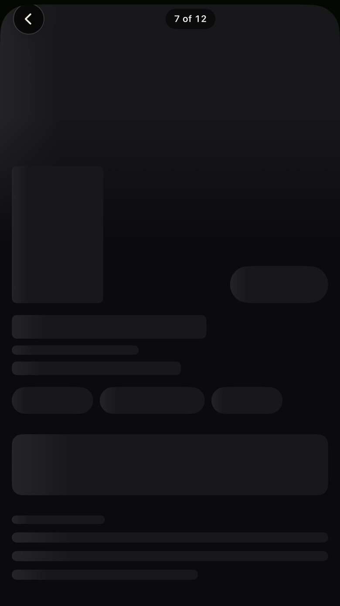
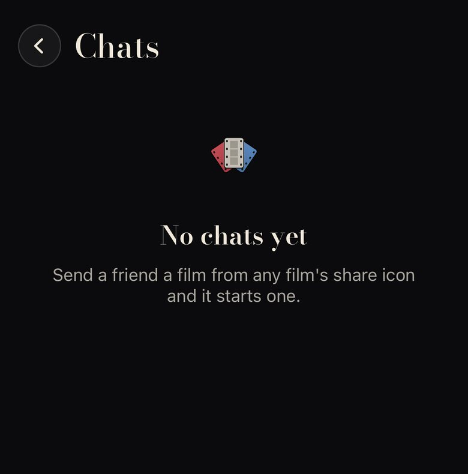
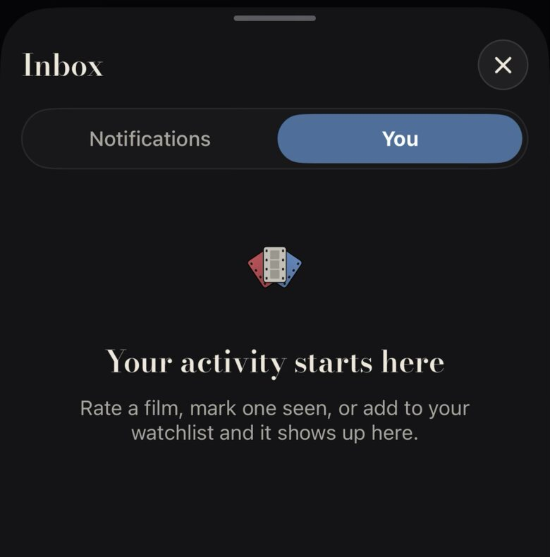

Skeletons today are grey rounded bars (Skeleton in Theme.swift:497, .skel on the web): the most generic loading state there is. Empty states are a centred fan, a Bodoni line and a grey sentence. Proposed: loading shows the shape of a screening (empty poster frames, hairline blanks where the words will print) and empty states are left-aligned like a programme note. Montage origin/main 938282d3. The doubled loading line is already fixed and not re-mocked.
A person's page while it loads (the same skeleton serves your profile, a friend's page and Films / Watchlist).

Rounded grey bars for the name and counts, a grey pill for the switch, flat grey tiles for posters. It could be any app.
Posters are frames: a 1px --line edge, a faint inner mat, a dark fall to the ground. Words are hairline blanks on the line they will print on, like a programme waiting for ink. Counts show a Bodoni em dash. The switch is its own empty stub strip. The sheen still sweeps, and the soft-claw strip runs under the status bar.
The grid becomes a strip of negatives: sprocket bands between rows with frame numbers (1A, 2A…) in tiny caps. Unmistakably film, but busier, it only suits grids, and the sprockets vanish the moment posters land, which can read as a flash.
Opening a film from a row ("7 of 12"): the page is grey bars for about half a second, longer on a cold start.

A grey poster block, a grey Trailer pill, three grey chips, a grey card, four grey lines.
The hero poster is an empty frame (its oxblood offset arrives with the art, so the hero lands). The title is a long hairline at Bodoni's baseline, the lane chip a dashed empty chip, the synopsis four blanks at Newsreader's line height. Labels that never change ("Your rating") print at once in --line-2, with five empty stars: the page is already the page.
Lists (Pitch's cut, lanes, Watchlist as a list, search) get the same frame and blanks, with the row's own rule and an em dash where the match will print.
Today every empty page is EmptyState: the fan (or three blank faces), a Bodoni heading and a grey UI sentence, centred about a third of the way down (owner, 2026-11-06). Proposed: left-aligned at the top like the rest of the page, a Bodoni title, one Newsreader sentence, one cream action. This reverses the 2026-11-06 centring, so it needs the owner's call.


As coded: PeoplePage.swift:353
Centred logo or faces, a centred line, a lot of black. Tidy, but it is the template empty state.
Send a friend a film from its share button, and the conversation starts there.
Send a filmRate a film, mark one seen or save it, and it is logged here, newest first.
Rate a few filmsFind friends from your contacts, or invite one to Blend.
Find friendsNo centred mark: the page title already carries the tick. The heading is Bodoni title size, left on the text edge, with a full stop (a statement, not a banner). One Newsreader sentence and one cream action. On Chats, a faint ghost row hints at what a chat looks like.
Each empty state is a blank ticket: dashed edge, a "Coming attractions" caps label, the stub empty. More branded, but it makes the ticket mean "nothing here", and the ticket is the app's best moment (Admit One). It also adds a caps label, which fix 10 is trying to reduce.
Skeleton → FrameSkeleton plus BlankLine) and web (.skel). It covers the grid, the film page, profiles and lists. Or B (a contact sheet with sprocket bands, grids only).